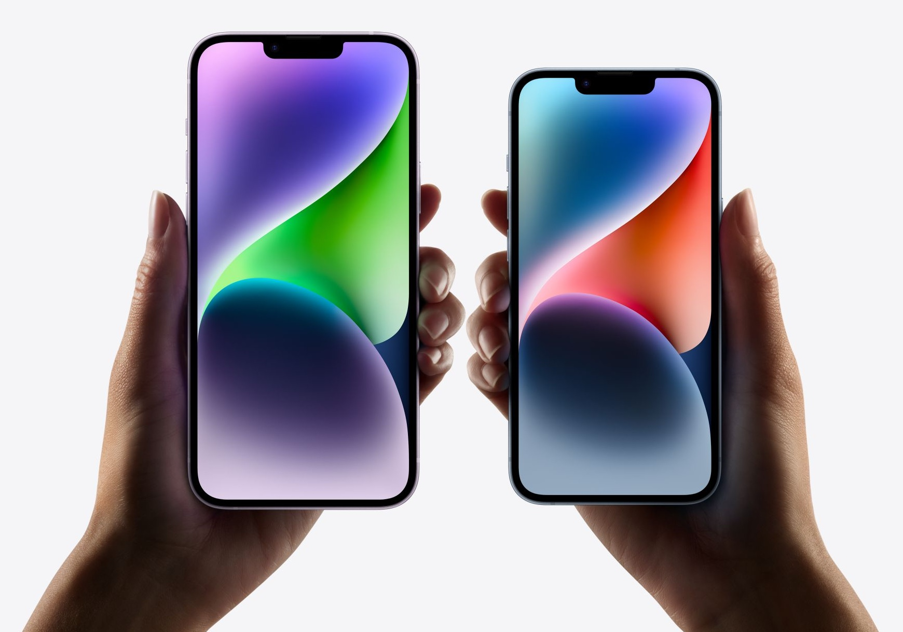
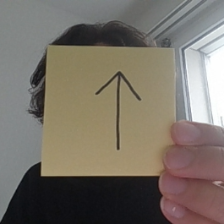
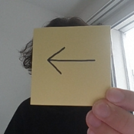
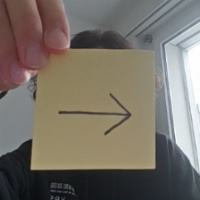
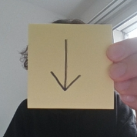
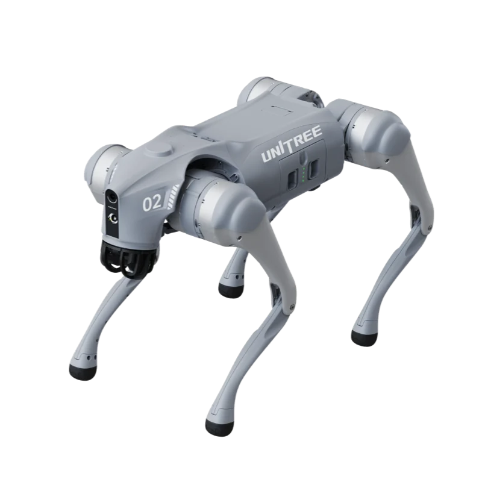

Willkommen an der ZHAW School of Engineering
KI WORKSHOP
Team
Und Ihr?
Links oder rechts?
Wir lesen eine Aussage vor. Je nach Antwort stellt ihr euch auf die linke oder rechte Seite des Raums.
Links oder rechts?
Ich nutze KI täglich.
Links oder rechts?
Ich habe Angst vor KI.
Links oder rechts?
Hund oder Katze?
Links oder rechts?
Ich habe schon einmal programmiert.
Links oder rechts?
Sport oder Gaming?
Links oder rechts?
KI wird meinen zukünftigen Beruf verändern.
Links oder rechts?
Berge oder Meer?
Links oder rechts?
Ich möchte später etwas mit Technik machen.
Inhalt
In diesem ersten Teil besprechen wir Grundlagen über KI.
Was ist KI?
Wo begegnen wir KI im Alltag?

Beispiel Smartphone
Smartphones nutzen KI für unzählige Dinge:
- Entsperrung via Gesichtserkennung
- Automatische Bildoptimierung
- Übersetzung
- Spracherkennung & Sprecher identifizieren
- Bilder sortieren
- Spam filtern
- Empfehlungen
- Fitness & Gesundheitsüberwachung
- ...
KI sind Computeralgorithmen die uns positiv überraschen.
Eine genaue Definition von KI ist schwer, da der Begriff Intelligenz selbst nicht genau definiert ist. KI Programme laufen in einem Computer und erfüllen Task bei denen wir Menschen denken, dass sie eine gewisse Intelligenz benötigen.
Beispiele von KI
Brettspiele spielen: Go
AlphaGO spielt das Brettspiel Go und besiegt dabei alle menschlichen Gegner. Dabei zeigt es beeindruckende Fähigkeiten in Strategie und Planung.
Videospiele dominieren: Starcraft
AlphaStar kann Videospiele spielen und schlägt dabei 99.8% aller menschlichen Spieler. Videospiele gelten als gute Challenge um neue Algorithmen zu testen.
Selbstfahrende Autos
Autos können mithilfe von Kameras die Umgebung wahrnehmen und selbstständig im Verkehr navigieren.
Proteinstrukturen vorhersagen
KI kann genutzt werden in der Arzneientwicklung und Medizin indem Proteinstrukturen vorhergesagt werden.
Bilder bearbeiten
KI kann Bilder bearbeiten und ist nun in vielen Tools integriert wie Adobe Photoshop.
Wetter vorhersagen
KI wird genutzt um das Wetter präziser und ohne teure Simulationen vorherzusagen.
Telefonanrufe durchführen
KI kann telefonieren und Termine abmachen und diese direkt in den Kalender einfügen.
Gefahren von KI
Was es nicht ist
Roboter versuchen die Weltherrschaft zu übernehmen.
Die echten Gefahren
Nicht Killerroboter, sondern Menschen, die KI missbrauchen oder ihr blind vertrauen.
Betrug
Geklonte Stimmen und gefälschte Anrufe
Deepfakes
Täuschend echte Bilder und Videos
Bias
KI übernimmt unsere Vorurteile
Privatsphäre
Was ihr eingebt, bleibt nicht privat
KI vs. Programmieren
Programmieren
Roboter steuern mit den Pfeiltasten
taste = lese_tastatur()
if taste == "↑":
roboter.move_forward()
elif taste == "←":
roboter.turn_left()
elif taste == "→":
roboter.turn_right()
elif taste == "↓":
roboter.move_backwards()
4 mögliche Eingaben, jede eindeutig. Wir kennen jeden Fall und können die Regel selbst hinschreiben.
Und mit der Kamera?
Was sieht der Computer?
Ein Kamerabild: 224 × 224 Pixel × 3 Farben = 150'528 Zahlen. Statt 4 Tasten.
Und mit der Kamera?
Jeder Pfeil sieht anders aus
Alle bedeuten: rechts →
bild = lese_kamera() # Welche Pixel? Welcher Stift? # Welches Licht? Welcher Winkel? if bild[57][103] < 80 and bild[58][104] < 80 and ... : roboter.turn_right() # ???
Unzählige mögliche Bilder. Dafür kann niemand alle Regeln von Hand schreiben.
Lernen
Statt Regeln geben wir Beispiele




Viele Bilder mit Label
lernt die Regel
Training
Neues Bild erkennen
Genau das macht ihr heute: Pfeile zeichnen, fotografieren, ein Modell trainieren, und der Roboterhund folgt.
Was können wir lernen?

Workshop Projekt
Wir werden ein Machine Learning Pipeline erstellen, um ein Roboter zu steuern.
Projekt: ML Pipeline
-
1 Daten sammeln
Pfeile auf Post-its zeichnen, mit der Webcam fotografieren und mit der Richtung labeln.
-
Modell
lernt die Pfeile2 Trainieren
Mit Teachable Machine ein Modell trainieren, das die Pfeilrichtung erkennt.
-

3 Auf den Roboter
Das Modell läuft auf dem Roboterhund Unitree Go2.
-
Rechts →
turn_right()4 Steuern
Pfeil in die Kamera halten, und der Hund läuft in diese Richtung.
Let's go!